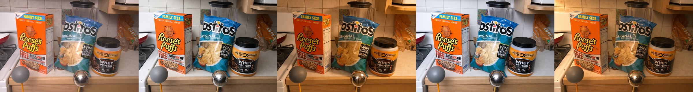
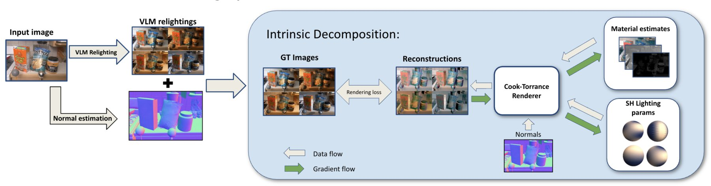
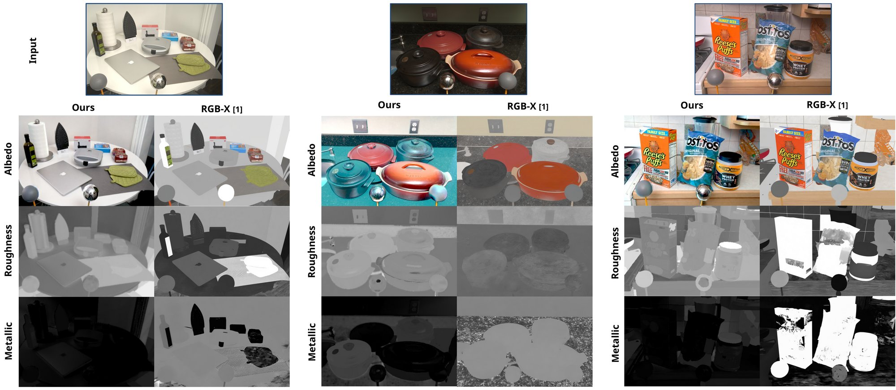
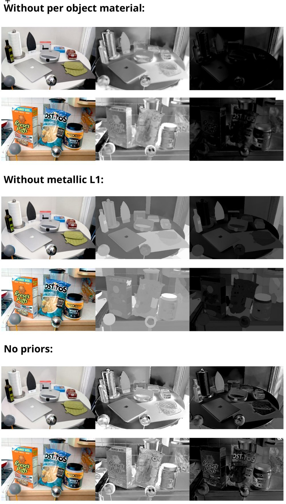

PBR Estimation with Diffusion-generated Relightings
Single-image material estimation by inverse rendering
TUM Visual Computing & AI Lab
Abstract
Existing PBR estimators fine-tune diffusion models on synthetic indoor data and generalize poorly to real photos. Large image models, on the other hand, have a good implicit understanding of how light interacts with materials. We use that prior: from a single RGB image, an image model (Flux, GPT-Image-2) generates the same scene under several lighting conditions. An inverse renderer then fits albedo, roughness and metallic maps that explain all relightings at once.
Method


The relit images serve as ground truth for a differentiable Cook-Torrance renderer. Surface normals come from a monocular normal estimator, and each relighting gets its own spherical-harmonics lighting. Materials and lighting are optimized jointly against a rendering loss. Since a few relightings leave the problem underconstrained, three priors keep the solution plausible: shared materials per object (from SAM segments), an L1 prior pushing metallic towards zero, and spatial smoothness.
Results
On real scenes from the MIT Multi-Illumination Dataset, our maps are compared with RGB↔X, a diffusion model fine-tuned for intrinsic decomposition.

Ablations

Without shared per-object materials, roughness and metallic pick up texture and shading. Without the metallic L1 prior, non-metal surfaces drift towards metallic. Without any priors, the maps are dominated by noise.
Columns: albedo, roughness, metallic.